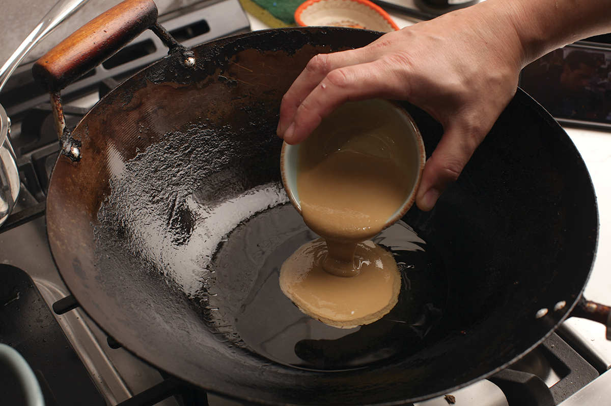
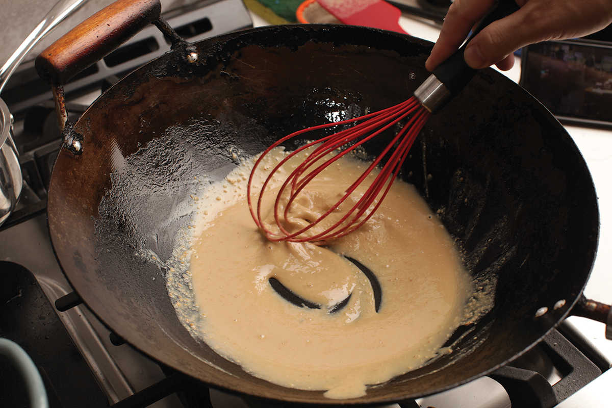
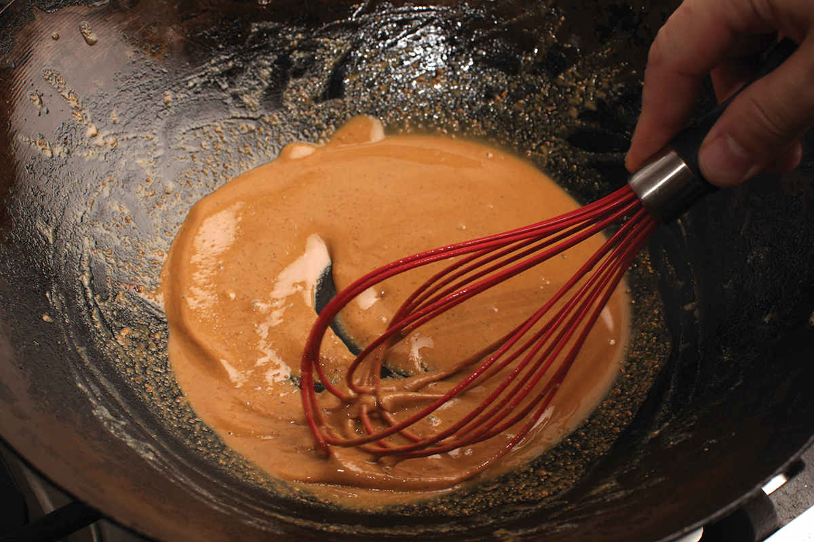

Chinese Sesame Paste and Its Substitutes
If you compare ingredients, Chinese sesame paste may seem very much like Middle Eastern tahini, but take a quick glance at them side by side and you’ll notice that they are quite different. Where tahini, made from raw, hulled sesame seeds, is a pale tan color and has a mild flavor, Chinese sesame paste is made from whole roasted sesame seeds. As a result, Chinese sesame paste has a much stronger, roastier aroma and darker color. Chinese sesame paste also tends to be a little thinner than tahini paste.
Chinese sesame paste is relatively easy to find at any decent Asian supermarket, and it lasts forever in the fridge, but if you’re shopping from a Western supermarket, there are a few reasonable substitutions for the Chinese stuff. None of them are particularly difficult to do.
Easy Mode • Tahini or Peanut Butter with Sesame Oil
The easiest substitution is to simply combine tahini or unsweetened peanut butter (the natural stuff that you have to stir) with roasted sesame oil. Peanuts and sesame seeds have very similar flavor profiles, and adding a touch of roasted sesame oil will get you even closer to the right flavor.
For every tablespoon of Chinese sesame paste called for, substitute 2 teaspoons (10 ml) of tahini or unsweetened natural peanut butter stirred together with 1 teaspoon (5 ml) of roasted sesame oil. You can make this stuff in larger batches using the same two-to-one ratio. Store it in a sealed container in the fridge indefinitely.
Normal Difficulty • Fry Tahini Paste
For significantly better results, try this: Fry regular tahini until it darkens and takes on a roasted aroma. I got this idea after watching Chris Matthews and Steph Li from Chinese Cooking Demystified fry peanut butter in their recipe for Shaxian peanut noodle sauce to approximate the flavor of deeply roasted Chinese peanut paste.*
It’s a brilliant idea that works just as well with tahini. To do it, start by heating up ¼ cup (60 ml) of roasted sesame oil in a wok over medium heat until shimmering, then add ½ cup (120 ml) of stirred tahini paste, reduce the heat, and cook until the sesame paste is a rich almond brown. This takes about 20 minutes on the lowest heat with some lazy stirs with a whisk every few minutes, or 5 to 7 minutes at medium-low with frequent stirring. It’s very easy to overcook the tahini to the point where it turns bitter, so it’s better to err on the side of caution and scrape it out of the wok to cool a little too soon rather than too late.



Expert Mode • Make It Yourself
The final method is to just make the stuff yourself (here) by roasting sesame seeds until golden brown, then grinding them with just enough sesame oil to thin them out into a smooth, silky paste. With a food processor it’s very easy. With a mortar and pestle it’s only slightly harder.
*You can find their recipe, a homemade clone of a popular Chinese fast food dish, for free on YouTube.